Références
Site de référence : https://www.opengl.org/
Manuel des fonctions : https://www.khronos.org/registry/OpenGL-Refpages/gl4/
Site de référence :
https://www.opengl.org/documentation/specs/glut/spec3/spec3.html
Installation sous Windows
- Téléchargez gcc avec MinGW et l'installer : https://sourceforge.net/projects/mingw/
- Placez-vous dans le répertoire \MinGW\bin et lancer la commande mingw-get install gcc
- Ajouter l'adresse MinGW/bin au chemin PATH
- Téléchargez le fichier GLUT-MinGW-3.7.6-6.mp.zip à l’url http://files.transmissionzero.co.uk/software/development/GLUT/ et décompactez GLUT pour MinGw.
-
Copiez le fichier
glut.h dans le répertoire \MinGw\include\GL\ et le fichierlibglut32.a dans le répertoire \MinGw\lib\ - Copiez le fichier glut32.dll dans le répertoire contenant vos fichier source (ou un répertoire se trouvant dans le chemin, par exemple le répertoire contenant l’exécutable gcc)
-
Pour compilez le programme utilisez la commande
gcc test.c -lglut32 -lopengl32 (pour la partie 2 qui utilise GLU ajoutez -lGLU). - Lancer le programme a.exe. Testez aussi le fichier test2.c qui ouvre deux fenêtres graphique.
Programme simple
La fonction initialisation (unique) permet d'initialiser les variables éventuelles.
Primitives graphiques OpenGL
Fonction glBegin dan l'API OpenGL : https://www.khronos.org/registry/OpenGL-Refpages/gl2.1/ Description des primitives :- GL_POINTS : Traite un point seul. Vertex n définit le point n
- GL_LINES : Traite une ligne. Sommets 2 n - 1 et 2 n définissent la ligne n.
- GL_LINE_STRIP : Dessine un groupe de lignes connectées. Sommets n et n + 1 définissent la ligne n.
- GL_LINE_LOOP : Dessine un groupe de lignes connectées en boucle. Sommets n et n + 1 définissent la ligne n.
- GL_TRIANGLES : Traite chaque triplet de sommets comme un triangle indépendant. Sommets 3 n - 2 , 3 n - 1 , et 3 n définissent le triangle n.
- GL_TRIANGLE_STRIP : Dessine un groupe de triangles connectés. Pour chaque triangle, sommets n, n + 1 , and n + 2 définissent le triangle n.
- GL_TRIANGLES : Traite chaque triplet de sommets comme un triangle indépendant. Sommets 1 , n + 1 , and n + 2 définissent le triangle n.
- GL_QUADS : Traite chaque groupe de 4 sommets comme un quadrilatère indépendant. Sommets 4 n - 3 , 4 n - 2 , 4 n - 1 , et 4 n définissent la quadrilatère n.
- GL_QUAD_STRIP : Dessine chaque groupe de quadrilatères connectés. Sommets 2 n - 1 , 2 n , 2 n + 2 , et 2 n + 1 définissent les quadrilatères n.
- GL_POLYGON : Dessine une forme, un polygone convexe. Sommets 1 à N pour définir le polygone.
Addition de vecteurs
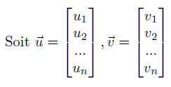
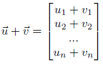
Multiplication scalaire
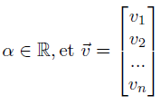
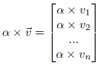
Produit scalaire
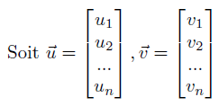
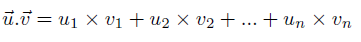
Distance
La distance, dans le plan, entre le point P=(x,y) et l'origine (0,0) est donnée par :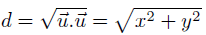
Longueur
La longueur d'un vecteur :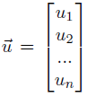
est donné par sa norme :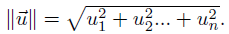
Produit vectoriel
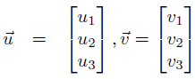
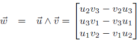
Transposée
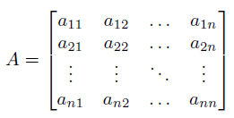
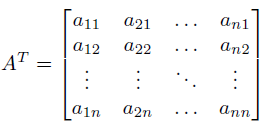

Addition matricielle
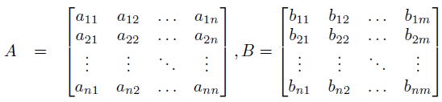
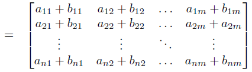
Produit matriciel
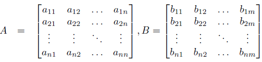
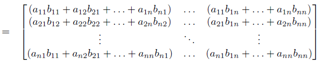
Soit C = A x B :
- Si A est un vecteur ligne, alors la résultat sera un vecteur ligne.
- Si B est un vecteur colonne, alors la résultat sera un vecteur colonne.
 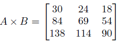
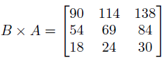
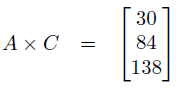
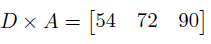
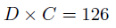
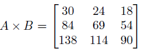
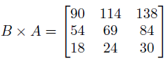
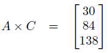
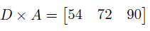
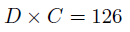
Définitions
Une courbe paramétrique cubique est définie par :
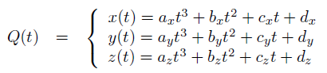Nous pouvons décomposer Q(t) avec la matrice C et le vecteur ligne T :
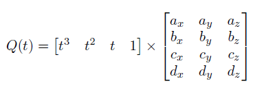On peut décomposer à nouveau la matrice C en deux matrices : M et G
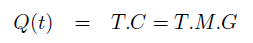 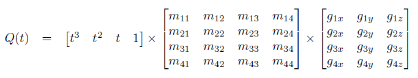Courbe de Bézier
La tangente au point P0 est donnée par le segment P0P1.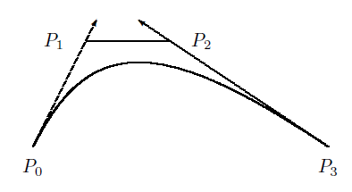
Pour raccorder deux courbes de bézier, nous devons vérifier que le segment P2P3 et P3P4 sont parallèles.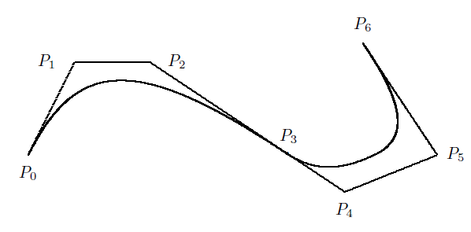
Exemple : P0 = [0 0 0], P1 = [0 1 0], P2 = [1 1 0], P3 = [1 0 0].
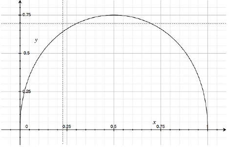 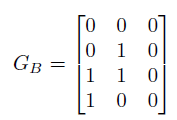 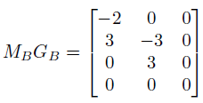 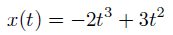 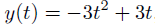 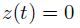 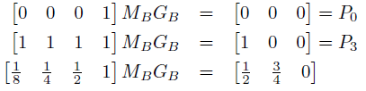Surfaces bi-cubiques
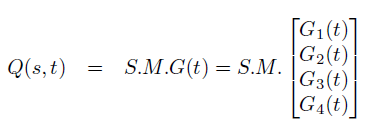 Chaque courbe Gi(t) est controlée par quatre points. Les quatres courbes Gi(t) sont donc controlées par 16 points Pij. 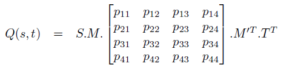Exemple d'une surface bi-cubique:
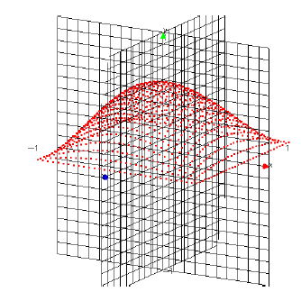La coordonnée y de la courbe est donnée par :
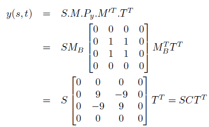Quadriques
Cylindre
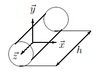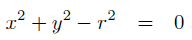
En coordonnées sphériques : 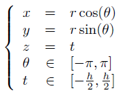
Sphère
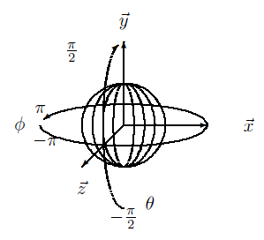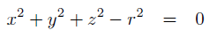
En coordonnées sphériques :
Cône de révolution
En coordonnées sphériques :
Translation dans le plan
Pour translater la maison suivant le vecteur de translation T(dx, dy):
Facteur d'échelle dans le plan
Pour ajouter un facteur d'échelle suivant la matrice de facteur d'échelle S(Sx, Sy):
On multiplie P1 avec le facteur d'échelle S(Sx, Sy)
Rotation dans le plan
Pour appliquer une rotation :
Cisaillement dans le plan
Pour appliquer un cisaillement avec la matrice C(Cx, Cy) :
Coordonnées homogènes
Pour faire des transformations, on utilise soit l'addition matricielle soit la multiplication matricielle. Nous allons voir comment passer par une multiplication matricielle dans tous les cas.
Nous ajoutons une troisième coordonnée nommée W. Un point P = (x, y) est représenté en coordonnée homogène par un vecteur z = (x, y, W).
Deux vecteurs sont identiques s'ils sont multiples l'un de l'autre.
Ex : (2,3,6) et (4,6,12) représentent le même point.
Translation en coordonnées homogènes
Idem pour les autres transformations
Transformations multiples
Translation suivie d'une rotation
P2 sera donc égal à :
Exemple :
Rotation suivie d'une translation
P2 sera égal à :
Exemple :
Caméra
La caméra est un programme qui va nous permettre de produire une image dans une fenêtre
Le repère \(\vec{u}, \vec{v}, \vec{n}\) pour la caméra et le repère \(\vec{x}, \vec{y}, \vec{z}\) pour la scène à représenter.
Spécifier le type de projection permettant de passer d'un espace à un plan (projection parallèles et perspectives).Spécifier les paramètres de vue , position et orientation de l'oeil et du plan de vue ou la scène à afficher.Supprimer les objets invisibles . Cette opération nommée clipping permet de supprimer les objets se trouvant dans le volume de projection.-
Afficher la projection dans la fenêtre. Les coordonnées du monde réel sont transformées en coordonnées fenêtre. On étudiera l'alogrithme classique nommé z-buffer
Transformation de visualisation
Cette transformation spécifie la position de la caméra ainsi que sa direction.OpenGL
- La bibliothèque OpenGL ne possède pas de fonctions spécifiques pour placer la caméra. C'est pourquoi dans le fichier base.c la fonction display appelant la fonction description commence par un appel à une translation glTranslated (0,0,-2*coord). La scène est donc déplacée à la coordonnée z = -2*coord par rapport à la caméra qui reste toujours fixe à l'origine 0 orientée dans le sens de l'axe \(-\vec{z}\)
- La bibliothèque place dans la même matrice les tranformations de modélisation et les transformations permettant de spécifier le point de vue. Cette matrice est nommé GL_MODELVIEW. L'appel à la fonction glMatrixMode(GL_MODELVIEW) permet de spécifier que les transformations suivantes s'appliqueront à la matrice modèle-vue.
- Pour initialiser la matrice, nous utiliserons la fonction glLoadIdentity() qui place, dans la matrice concernée, la matrice identité. La fonction resize (redimensionnement de la fenêtre) du fichier base.c se termine en mettant en fonctionnement la matrice de modèle-vue.
Projections
Les projections permettent de passer d'une représentation de la scène dans l'espace à trois dimensions à une représentation dans le plan à deux dimensions.
Projections géométriques planes
Les projections transforment les points d'un système de coordonnées de dimension \(n\) en des points dans un système de coordonnées de dimension \(n-1\).
Les projecteurs sont les rayons droits qui partent du centre de projection, passent par chaque point de l'objet et intersectent un plan de projection.
Ce centre de projection peut être à une distance infinie, c'est le cas avec la
Projection perspective d'un cube
Mathématiques pour les projections
Soit un point \(P=(x,y,z)\) de l'objet à projeter et un point \(P_r=(x_p,y_p,z_p)\)Nous allons determiner les relations en les coordonnées du point de l'objet \((x,y,z)\) et les coordonnées du point de l'objet dans le plan de projection \((x_p,y_p,z_p)\). La figure ci-dessous illustre la calcul de la coordonnée \(y_p\) en se plaçant dans le plan \(x=0\).
Elimination des parties cachées
Si on affiche un cube bleu puis que l'on se recule et que l'on affiche une sphère verte, le dernier objet affiché se retrouve au premier plan. En utilisant l'algorithme des faces cachées, l'ordre dans lequel on trace l'objet n'a pas d'importance. L'objet le plus proche de l'observateur sera au premier plan.
-
Algorithme méthode basée image :Début
Pour chaque pixel de l'image Faire
Déterminer le rayon visuel reliant le centre de la rojection et le pixel de l'image.
Déterminer l'objet le plus proche de l'observateur.
Afficher le pixel en utilisant la couleur appropriée.
FinSi la scène contient \(n\) objets et \(p\) pixels, il faut examiner chaque objet pour chaque pixel soit
\(n \times p\) configuration possibles -
Algorithme méthode basée objets :Début
Pour chaque objet de la scène Faire
Déterminer les parties de l'objet non occultées par d'autres parties du même objet ou par d'autres objets.
Afficher le pixel en utilisant la couleur appropriée.
FinSi la scène contient \(n\) objets et \(p\) pixels, il faut examiner chaque objet par rapport aux autres objets soit
\(n \times n\) configuration possibles
Algorithme du z-buffer
Développé par Edwin Catmull, l'algorithme z-buffer est un algorithme basé image. C'est l'un des plus simples à mettre en oeuvre aussi bien au niveau logiciel qu'au niveau matériel.
XSIZE = 1024
YSIZE = 768
Variables
COUL = tableau de XSIZE x YSIZE de couleurs
PROF = tableau de XSIZE x YSIZE d'entiers
Début
Initialiser le tableau PROF avec la valeur de z du plan arrière
Initialiser le tableau COUL avec la couleur de fond
Pour chaque objet à représenter Faire
Pour chaque pixel p=(x,y) de l'objet Faire
Calculer la profondeur z de l'objet au pixel p=(x,y)
Si z > PROF[x,y] Alors
PROF[x,y] ← z
COUL[x,y] ← couleur de l'objet au pixel (x,y)
Fin Si
Fin Pour
Fin Pour
Fin
- Le tableau nommé GL_DEPTH_BUFFER_BIT est un tableau contenant les informations sur la profondeur.
- Le tableau GL_COLOR_BUFFER_BIT est un tableau contenant les informations sur les couleurs.
- La fonction glClear permet d'effacer ce tableau. Les fonctions glEnable(GL_DEPTH_TEST) et glDisable(GL_DEPTH_TEST) permettent d'utiliser ou non le z-buffer lors de l'affichage.